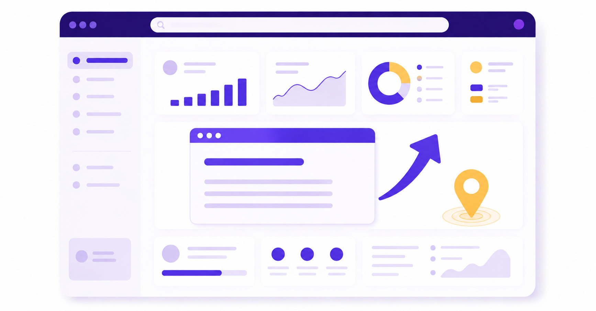

Améliorer son référencement naturel : les bases TPE/PME
Pas besoin d'un budget agence pour corriger les bases. Quatre chantiers à traiter dans l'ordre : la fiche Google Business Profile, la structure du site, le contenu, et le tracking sans lequel vous ne saurez jamais ce qui a marché.
Publié le 31 août 2026

1. La fiche Google Business Profile, si vous avez une activité locale
Pour un commerce physique, un institut, un artisan ou toute activité avec une zone de chalandise, la fiche Google Business Profile pèse souvent plus lourd que le site lui-même sur les recherches « près de chez moi ». Une fiche complète (horaires à jour, catégorie précise, photos réelles, réponses aux avis) conditionne l'apparition dans le pack local — la carte Google avec les trois résultats en haut de page.
2. La structure du site : ce qui coûte cher à ignorer
Trois points reviennent systématiquement dans nos audits : un seul H1 par page contenant le mot-clé principal, une hiérarchie de titres logique (H2 pour les sous-thèmes, H3 pour les détails, sans sauter de niveau), et des URLs courtes et lisibles. Ce n'est pas glamour, mais c'est ce que Google lit avant de comprendre le reste. En préparant cet article, on a passé notre propre site au crible avec Ubersuggest : cinq titres dépassaient 60 caractères, un point qu'on a corrigé au même moment sur nos pages de packs.
Le maillage interne fait partie de la même famille de sujets : chaque page doit être reliée à 3-6 pages pertinentes par un lien contextuel, avec une ancre descriptive plutôt qu'un « cliquez ici ». C'est ce qui aide Google à comprendre l'architecture de votre site — et vos visiteurs à trouver ce qu'ils cherchent.
3. Le contenu : répondre avant de remplir
La réponse à la question posée par le titre doit arriver dans les 100 premiers mots, pas après une longue introduction. Un contenu utile couvre les termes et entités liés à son sujet sans les répéter artificiellement, et privilégie un chiffre concret ou un exemple nommé plutôt qu'une généralité. Pour aller plus loin sur ce que les moteurs IA attendent en plus du SEO classique, voir notre article SEO vs GEO.
4. Le tracking : la base qu'on oublie le plus souvent
Sans Google Tag Manager et Google Analytics 4 correctement implémentés, impossible de savoir si vos changements SEO ont un effet réel sur les demandes clients. C'est la première chose qu'on installe avant même de toucher au contenu, dans tous nos packs — parce qu'optimiser à l'aveugle, c'est optimiser au hasard.
Et ensuite ?
Ces quatre chantiers couvrent l'essentiel pour un site qui démarre. Une fois en place, la suite consiste à suivre le positionnement dans la durée et à ajuster selon ce qui fonctionne réellement — c'est le rôle d'un audit SEO régulier plutôt que d'une liste de bonnes pratiques figée.
Référencement naturel — ce qu'on nous demande le plus
Par quoi commencer ?
Par la fiche Google Business Profile si votre activité est locale, puis par la structure du site et le tracking GTM/GA4, sans lequel vous ne pouvez pas mesurer l'effet de vos changements.
Combien de temps avant de voir des résultats ?
Plusieurs mois en général : le temps que Google recrawle les pages modifiées et que le contenu accumule de l'autorité.
Faut-il publier beaucoup de contenu ?
Non. La pertinence compte plus que la fréquence : un article qui répond précisément à une vraie question vaut mieux que cinq articles génériques.
Envie d'un diagnostic sur votre propre site ?
Demandez votre audit gratuit, ou découvrez le Pack Visibilité Complète pour un accompagnement SEO/GEO continu. Voir aussi nos offres dans leur ensemble.